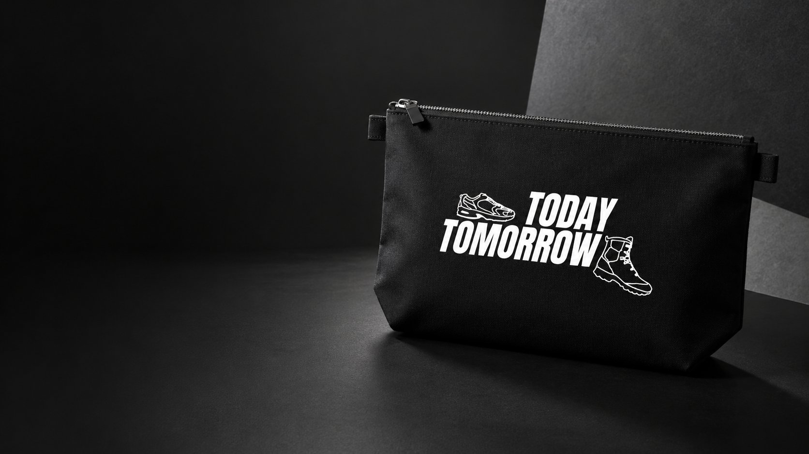
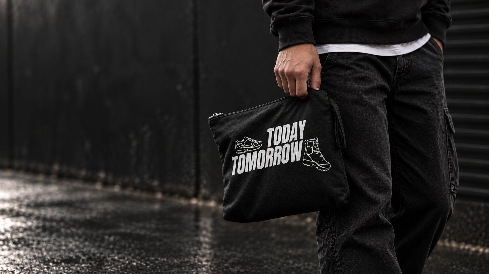
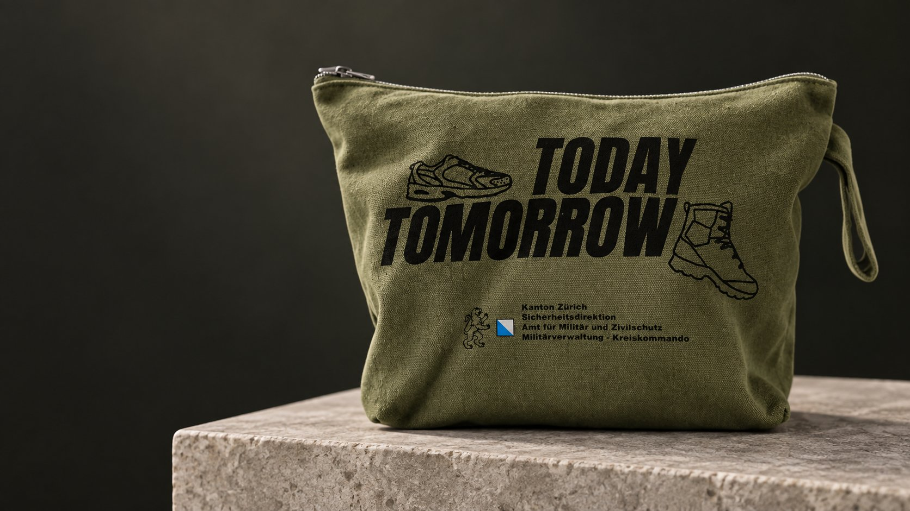
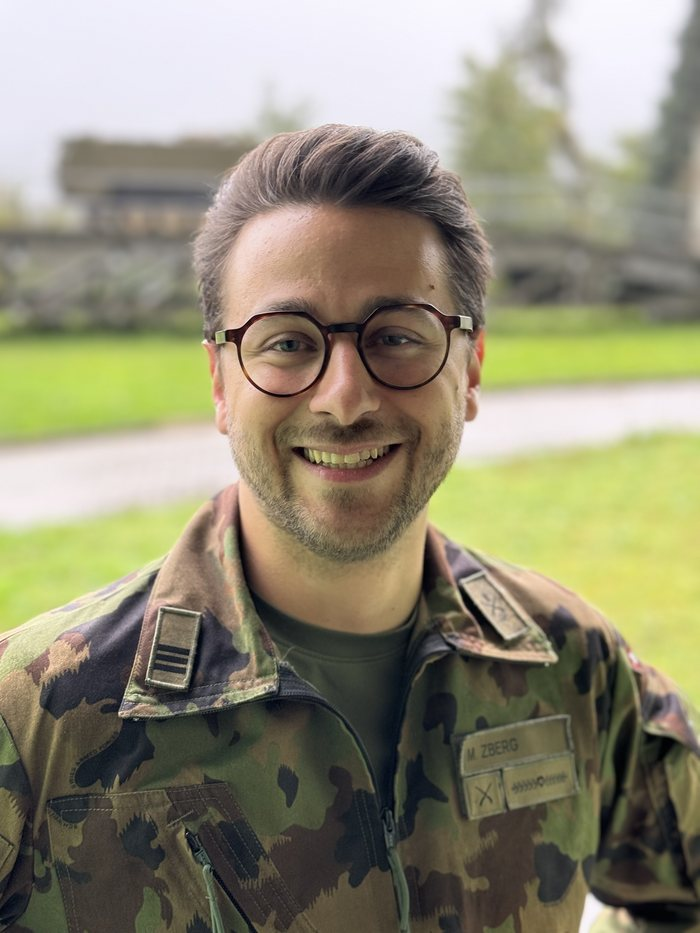

Der Adulteen Orientierungstage Bag, kurz OT-Bag, begleitet junge Frauen und Männer an den Orientierungstagen.


Jede Bag ist schwarz, robust und mit dem Adulteen-Signet „Today Tomorrow" bedruckt – ein Statement für den Übergang vom Jugendlichen zum Erwachsenen. Gefüllt mit ausgewählten Alltagsprodukten, macht sie jedem Teilnehmenden der Orientierungstage eine Freude und bleibt als nützlicher Begleiter im Alltag.
Seit April 2026 beliefert Adulteen exklusiv alle Teilnehmenden der Zürcher Orientierungstage mit einem eigens gebrandeten OT-Bag – in Zusammenarbeit mit der Sicherheitsdirektion, dem Amt für Militär und Zivilschutz und der Militärverwaltung-Kreiskommando des Kantons Zürich.


Dank der guten Zusammenarbeit mit Adulteen können wir den Teilnehmenden ein tolles Geschenk mit nach Hause geben. Die Produkte begeistern und schaffen einen Mehrwert, welcher dem Orientierungstag zugute kommt.
Adulteen ist eine Marke von Present-Service, das seit vielen Jahren Sampling-Programme für junge Zielgruppen in der Schweiz umsetzt. Gemeinsam mit Kanton Zürich läuft die Zusammenarbeit bereits seit April 2026 – jetzt möchten wir den OT-Bag auch Teilnehmenden in weiteren Kantonen zugänglich machen.
Bestellen Sie den OT-Bag kostenlos für die Teilnehmenden Ihrer Orientierungstage, oder melden Sie sich für Fragen direkt bei uns.